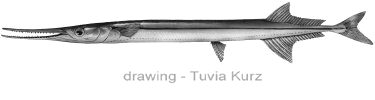

Red sea Needlefish (Houndfish)
( Tylosurus choram )
Small shoals of the fish swim near the sea surface quite speedy. They look like common river fish - not so colorful as butterflyfish or other coral inhabitants. To make a shot it should slow running for a second.

This fish has got a quite toothy mouth. Teeth are well seen from a distance. I read, the fish may pierce another fish by its thin toothy mouth. That is why the fish name is needlefish , not because it is so slim. Actually to catch small prey houndfish does fast side sweep motion by its thin beak. A lot of teeth helps to catch a small fish at high speed.
Tylosurus is dangerous for human. With its size about 1 meter it may occasionally injure a fisherman by its thin toothy beak when the fish flies over water.